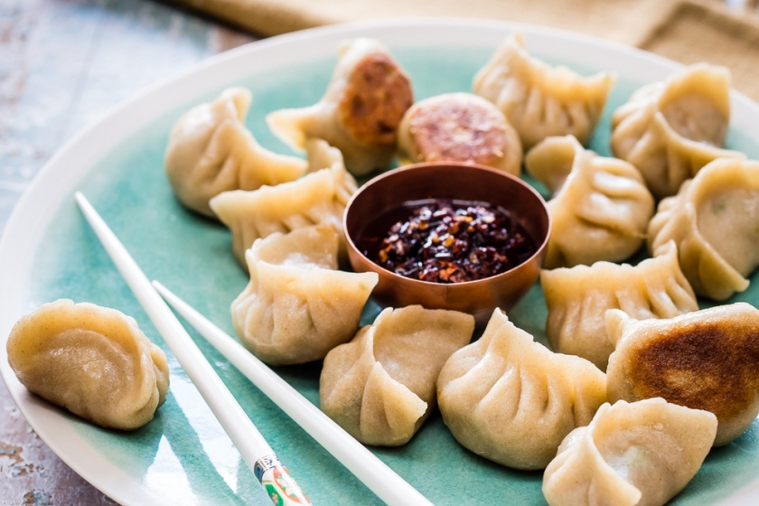

Pot Stickers

Great staple takeout food that you can make at home!
Ingedients:
Dough Mix:
- 300g Plain flour
- 200ml Boiling Water
- 1 Pinch of salt
Filling Mixture:
- 1/2 TSP BAKING SODA
- 300G PORK SHOULDER OR MINCED PORK
- 1 TSP CORN FLOUR
- 1 1/2 TSP SALT
- 1 TSP SUGAR
- PINCH OF WHITE PEPPER
- 3 TBSP COLD WATER
- 1 TBSP SHAOXING RICE WINE, OR DRY SHERRY
- 1 TSP DARK SOY SAUCE
- 1 TSP LIGHT SOY SAUCE
- 2 TBSP SESAME OIL
- 200G BOK CHOY, FINELY CHOPPED
- 2 SPRING ONIONS, FINELY SLICED
- 2 TSP GINGER, FINELY DICED
- 1 CLOVE GARLIC, FINELY DICED
- 1 TBSP OIL
- 100ML WATER
Dipping Sauce:
- 1 TSP SESAME OIL
- 2 TBSP LIGHT SOY SAUCE
- 1 TSP CHILLI OIL
Steps
- Mix the flour, salt and boiling water in a large bowl you have a rough ball shape. Remove from the bowl and
knead for 10 minutes until smooth. Divide the dough into two. Use your thumbs to make a hole in the middle
of each piece, and them stretch them out into bagel shapes. Cover the ‘bagels’ with cling film and rest for
20 minutes.
- Combine the pork mince, baking soda, cornflour, seasonings and liquid ingredients. Stir vigorously in one
direction until all the liquid is absorbed and the pork begins to bind to itself. Mix in the bok choy,
spring onions, ginger and garlic.
- Lightly flour your work surface. Divide each piece of rested dough into 16 even-sized pieces.
- Lightly dust the dough pieces with flour. Place a piece onto the work surface with its cut side down, and
flatten with a floured palm. Roll each piece of dough into a thin disc, roughly 8cm in diameter.
- Place a heaped teaspoon of filling into the centre of each wrapper. Fold over into a half moon shape. Cradle
the wrapper in one hand and use the other hand to create pleats along the edge furthest away from you,
pinching the two edges together after each pleat as you go, to create a crescent shape. Avoid getting any
filling on the edges and be sure to pinch firmly as you pleat to create a good seal.
- Cook the dumplings in two batches of 16. Heat the oil in a large frying pan over medium heat. Fry the
dumplings flat side down for about 2 minutes until a golden crust forms on the bottom. Add the cold water
and immediately cover with a lid (or a heavy plate if your pan doesn’t have a lid). Let the steam cook the
dumplings for 8 minutes or until all the water has evaporated. Remove the lid and let the dumplings to cook
for a further minute until they lift off from the bottom of the pan easily. You might need a spatula to help
them along if they are a little sticky, being careful not to break the wrapper. Repeat with the second
batch.
- While the dumplings are cooking, prepare the spicy soy sauce by mixing sesame oil, soy sauce, and chilli
oil.
- Serve the dumplings in a big pile, making sure to show off the golden bottoms. Drizzle the spicy soy sauce
on top, or serve on the side for dipping.